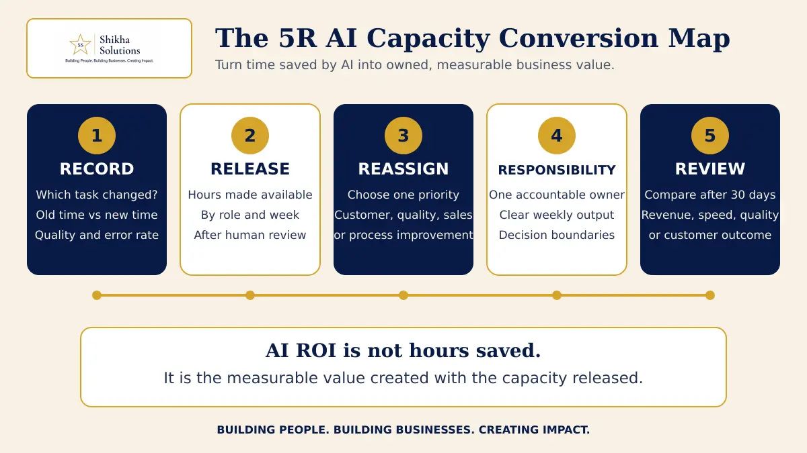

Treat AI-created time as business capacity, not an invisible saving. Measure the hours genuinely released after human checking, decide where those hours will create the most value, assign one accountable owner and review a business outcome after 30 days. Without deliberate redeployment, faster work may produce no meaningful improvement.
What happened
Wipro’s chief technology officer told Reuters that the company’s AI initiatives had freed capacity equivalent to about 20,000 employees and that the people affected were redeployed across other roles. Wipro has also trained more than 100,000 employees in advanced AI skills. The company is moving towards what it calls a human–AI operating model. Its CTO stressed that productivity alone is not enough: AI should also improve customer experience, create revenue or support another clear business goal. These are Wipro’s reported figures and statements. The framework below is Shikha Solutions’ interpretation for SME founders.
Why SME founders should pay attention
Most AI discussions begin with a tool: Which platform should we buy? Which task can it automate? How many minutes will it save?
Those questions matter, but they stop too early.
If an employee saves five hours every week, the business has not automatically saved money or improved performance. The salary continues, the working day remains the same and the released time may simply be absorbed by more messages, meetings or low-priority activity.
The founder therefore needs to make a second decision: What valuable work should now occupy the released capacity?
For a small business, that could mean faster customer follow-up, more quality checks, better collections, cleaner operating data, stronger process documentation or time to coach another employee. The correct choice depends on the company’s current constraint.
This is also a founder-dependency issue. If every AI-generated output still needs the founder to check, correct and approve it, the tool may move work without releasing meaningful capacity. Automation should reduce repeated dependence while preserving human judgement where the risk genuinely requires it.
What founders commonly misunderstand
1. Faster completion is not the same as financial saving
If a two-hour task now takes 30 minutes, 90 minutes have been released. A financial benefit appears only when that capacity prevents additional hiring, increases useful output, improves service or contributes to revenue.
2. Adoption is not an outcome
The number of prompts written, licences purchased or employees trained tells you whether people are using AI. It does not tell you whether errors fell, customers received faster answers or sales improved.
3. Saved time does not redeploy itself
Without a clear priority, employees naturally fill available time with whatever feels urgent. The result is more activity, not necessarily more value.
4. Human review has a real cost
AI output that takes 20 minutes to produce but 45 minutes to verify has not saved 40 minutes from a one-hour task. Measurement must include correction, checking and exception handling.
5. Every employee does not need the same AI target
An accounts role, sales role and operations role create value differently. Redeployment should follow the bottleneck in each process—not a company-wide instruction to “use AI more.”
The Shikha Solutions 5R AI Capacity Conversion Map

1. Record
Choose one repetitive workflow and document the old time, new time, human-review time, error rate and output volume. Use a real baseline rather than an estimate made after implementation.
2. Release
Calculate the capacity genuinely made available by role and week. Subtract time spent checking, correcting and managing exceptions. This is released capacity—not yet business value.
3. Reassign
Direct the available time towards one current constraint. Choose a specific priority such as overdue collections, lead follow-up, customer retention, quality control or process improvement. Avoid giving the employee five new priorities.
4. Responsibility
Assign one person to own the new output. Define what they can decide, when they must escalate and the weekly result expected. “Use the saved time productively” is not an operating instruction.
5. Review
After 30 days, compare one business measure with the baseline. Did response time fall? Did more proposals receive follow-up? Did collection ageing improve? Did rework decline? Continue, change or stop the workflow based on evidence.
Take one AI-assisted task in your business and complete five lines: task changed; verified hours released each week; bottleneck receiving those hours; owner and weekly output; and the 30-day measure.
Finish this sentence: “AI releases ___ hours each week from ___. ___ will use that capacity to improve ___. We will measure ___ on ___.”
If you cannot complete it, the automation may be useful—but its business value is still undefined.
Final thought
AI productivity should not become another activity report. For an SME, its value lies in what the business can now do better without increasing cost, complexity or founder involvement.
Begin with one workflow. Measure honestly. Reassign the released capacity to one important constraint. Give it an owner and a 30-day outcome.
The tool creates speed. Management converts that speed into value.
Take Shikha Solutions’ free 15-question Business Health Check. It takes approximately three minutes and helps identify whether sales, cash flow, operations, team capability or founder dependency needs attention first.
Take the free Business Health Check →